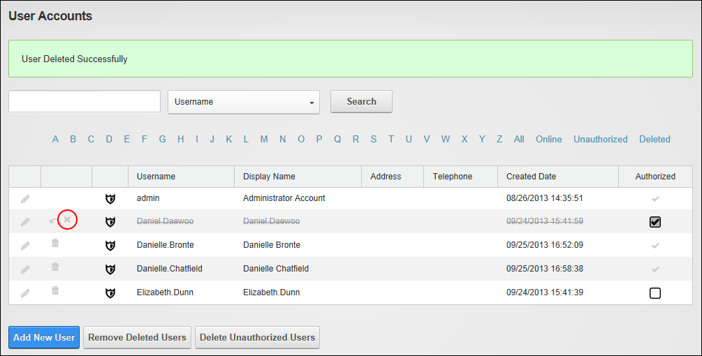

Removing a Deleted a User Account
How to remove a "soft" deleted user account using the User Accounts module. This removes all information related to this account from your site's database.
- Navigate to Admin >
 User Accounts - OR - Go to a User Accounts module.
User Accounts - OR - Go to a User Accounts module.
- Find the user to be deleted using a filter or by searching.
- Click the Remove
 button beside their record. This displays the message "Are you sure you want to permanently remove this user?"
button beside their record. This displays the message "Are you sure you want to permanently remove this user?"

- Click the Yes button to confirm.